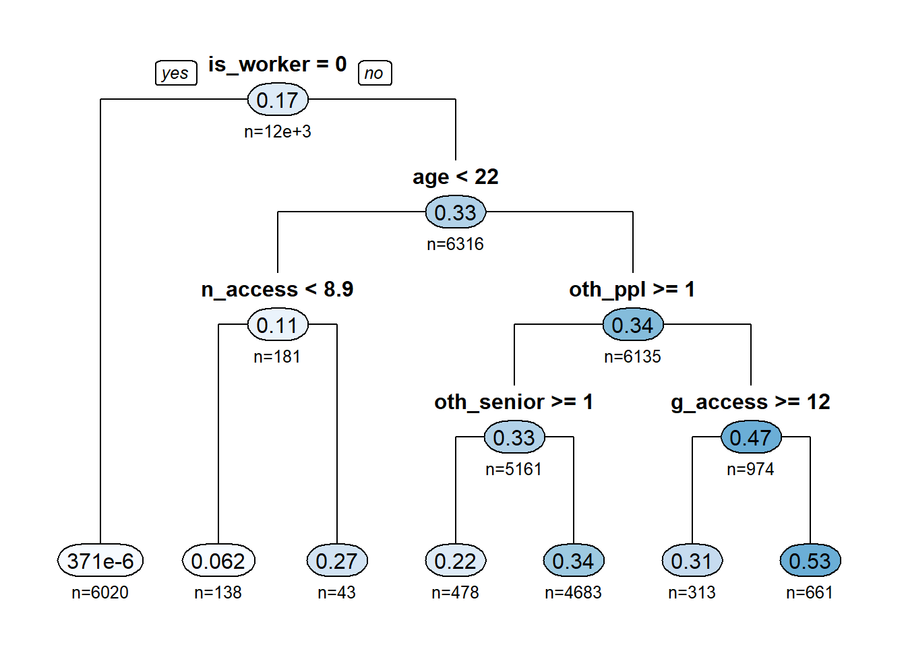
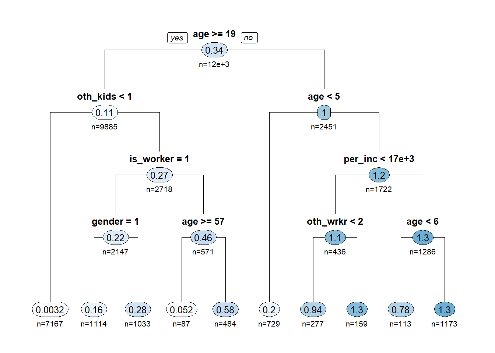
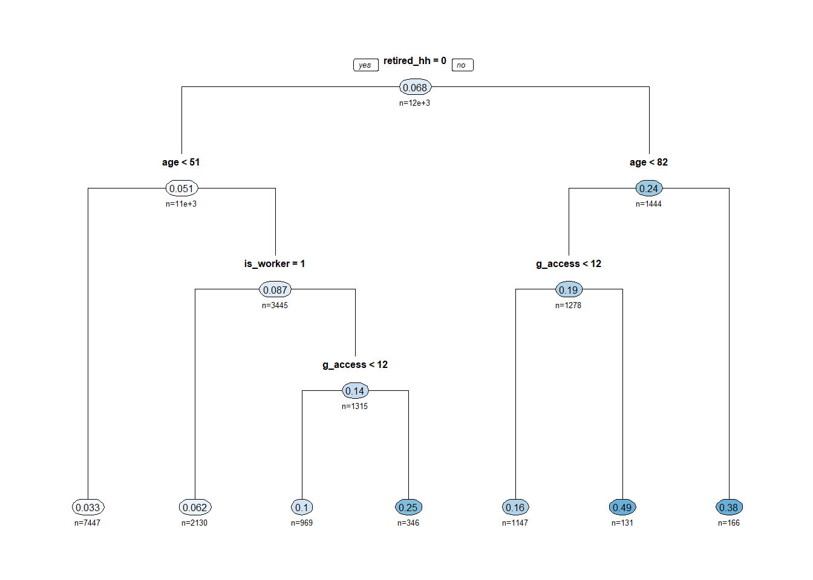

Resident Production Model
Introduction
The goal of the resident trip production models in TRMG2 is to determine how many trips each individual will make in a day. Unlike traditional trip generation models, attractions are not estimated in this step. Instead, the destination choice models estimate coefficients on employment as part of the size term, which function similar to trip attractions.
TRMG2 production models are person-level models. This means that detailed information about each person (e.g. age), as well as the characteristics of their household and geographic location, are used together in the prediction.
Using DT to guide segmentation
After attempting various forms of generalized linear models (GLM) and logistic regression models, Caliper opted to use Decision Trees (DT) from the machine learning stack. This model form had much stronger predictive power compared to traditional approaches while still being easy to understand and explain.
In the trees below, each node lists the average trip rate as well as the percent of the population that node represents. This lets you see the overall average trip rate (top of the tree) and how it changes as you segment the surveyed population.
To save room in the charts, many of the explanatory variables are abbreviated. Their meanings are listed below for reference:
- Person-level variables
- is_worker: if the person is a worker
- is_senior: if the person is >= 65
- is_child: if the person is < 18
- age: person’s age
- gender: Male (1) and Female (2)
- single_parent: if the person is the only adult in a household with children
- Household Variables
- retired_hh: if the household contains only retirees
- per_inc: per-capita income (household income / size)
- oth_ppl: number of other people in the household
- oth_kids: number of other children in the household
- Zonal variables (see accessibility page for more details)
- g_access: general accessibility of the person’s home zone
- n_access: nearby accessibility of the person’s home zone
- e_access: employment accessibility of the person’s home zone
Work Tours
W_HB_W_All
These are the traditional home-based work (HBW) trips. Unsurprisingly, the most important factor is whether or not the individual is a worker. After that, the person’s age and living arrangements (e.g. other workers) best predict the trip rate.

R-squared: 0.366
W_HB_O_All
When someone makes a stop on their way to or from work, they are making a home-based other trip on a work tour. Work status is the most important predictor followed by age. The make up of the house is also important. Households with other people present are less likely to need to make (e.g.) grocery stops on the way home from work. This is an intuitive result.

R-squared: 0.157
W_HB_EK12_All
This trip type describes adults who drop off children on the way to work or pick them up on the way home (school escort trips). Having children and being a worker are both required to qualify to make this trip, and they show up as the most important questions in the decision tree. Finally, the age of the adult plays a small role in determining final trip rates.

R-squared: 0.184
Non-Work Tours
N_HB_K12_All
This trip type is made by two types of people:
- Students traveling to school
- Parents taking their kids to school (not on a work tour)
The decision tree model recognizes this basic structure in the data and uses age to split people into these two groups. For adults (left side of the tree), having kids is required to make this trip. Their work status and age further refine their trip rate. For children (right side of the tree), age is the primary factor. Children under 5 do not attend K12, but they do make these trips if they have older siblings.

R-squared: 0.536
N_HB_OME_All
This trip type (“Other - Maintenance/Eat” or “OME”) captures shopping, dining, and maintenance activities. These are trips where the primary purpose includes spending money. These trips are harder to predict based on the data collected in the survey, and this results in lower r-squared values. Nonetheless, factors like age, accessibility, work status, and income do help to differentiate trip rates.

R-squared: 0.114
N_HB_OD_Long
These are other, discretionary trips with a long duration time (over 30 minutes). A common example is visiting the home of friends or family. Work status, age, and accessibility are the primary factors used to differentiate trip rates.

R-squared: 0.143
N_HB_OD_Short
These are other, discretionary trips with a short activity duration. These are similar to N_HB_OD_Long, and include things like trips to a friend’s house, church, or other locations. Like other discretionary tours, the low r-squared indicates some difficulty in making predictions. However, of the variables available, accessibility, age, and children in the household contribute the most to differences in trip making.

R-squared: 0.097
N_HB_OMED_All
These are medical trips, and as a result, retirement and age play an important role in predicting trip rates. This trip type has the poorest r-squared regardless of model form used. The survey exploratory data analysis shows that other aspects of this trip type are unique enough to keep it separated - even this model applied the total average trip rate of 0.066 trips to every person. The final model below does provide a small improvement over that approach.

R-squared: 0.027
Calibration
Calibrating the production rates is done to ensure that the final model is producing the same number of trips per person on average as the survey. One complicating factor in this comparison is that the survey and model socio-economic data have different total populations.
- Survey: 1.71 million
- Model: 1.83 million
As a consequence, the survey trip totals will be increased by 1.07 and then compared to model results. The table below shows the production model results compared back to the total trips in the survey (factored up). While close, the model consistently predicts fewer trips compared to the survey.
Another important consideration is which type of survey weight to use. RSG provides two weight fields on the survey:
- Household weights
- Trip weights
Importantly, trip weights have extra adjustment based on GPS traces to account for things like un-reported trips. As a result, the trip weight gives a higher number of total trips. For estimation, however, the decision trees worked best with household weights, which allowed each person to have an integer count of trips instead of 1.2 or 3.4. This allowed us to identify the features properly, but then calibration is required to scale up the trip totals as shown below.
Finally, the market segmentation created by the Auto Ownership model is not exactly the same as what is observed in the survey. While the share of total households owning 1, 2, 3, and 4+ autos is calibrated to match the survey, the AO model cannot guarantee that market segmentation will match. This is because auto sufficiency is defined by autos owned and number of adults. In other words, the production rate calibration factors are the first opportunity to correct market segmentation imbalanced introduced by the auto ownership model.
In the table below, the model results are compared to the survey trips. As expected (due to the weighting issue above), the model underpredicts trip making.
| Trip Type | Observed | Modelled | Difference | %Difference |
|---|---|---|---|---|
| N_HB_K12_All | 664,033 | 568,302 | -95,731 | -14 |
| N_HB_OD_Long | 1,031,920 | 915,785 | -116,135 | -11 |
| N_HB_OD_Short | 652,070 | 562,203 | -89,867 | -14 |
| N_HB_OME_All | 1,203,499 | 998,270 | -205,229 | -17 |
| N_HB_OMED_All | 128,837 | 103,733 | -25,104 | -20 |
| W_HB_EK12_All | 76,950 | 58,039 | -18,911 | -25 |
| W_HB_O_All | 354,862 | 288,810 | -66,052 | -19 |
| W_HB_W_All | 680,991 | 789,013 | 108,022 | 16 |
| All | 4,793,162 | 4,284,155 | -509,007 | -11 |
The calibration factors below are the ratio of the observed to modeled trips. These are applied by trip type and segment to ensure total trip making matches the survey (based on trip weight).
| Trip Type | segment | Factor |
|---|---|---|
| N_HB_K12_All | v0 | 0.40 |
| N_HB_K12_All | vi | 0.57 |
| N_HB_K12_All | vs | 1.30 |
| N_HB_OD_Long | v0 | 0.49 |
| N_HB_OD_Long | vi | 0.63 |
| N_HB_OD_Long | vs | 1.28 |
| N_HB_OD_Short | v0 | 0.52 |
| N_HB_OD_Short | vi | 0.80 |
| N_HB_OD_Short | vs | 1.27 |
| N_HB_OME_All | v0 | 0.76 |
| N_HB_OME_All | vi | 0.75 |
| N_HB_OME_All | vs | 1.34 |
| N_HB_OMED_All | v0 | 1.71 |
| N_HB_OMED_All | vi | 0.75 |
| N_HB_OMED_All | vs | 1.32 |
| W_HB_EK12_All | vi | 0.86 |
| W_HB_EK12_All | vs | 1.37 |
| W_HB_O_All | v0 | 0.76 |
| W_HB_O_All | vi | 0.80 |
| W_HB_O_All | vs | 1.27 |
| W_HB_W_All | v0 | 0.88 |
| W_HB_W_All | vi | 0.63 |
| W_HB_W_All | vs | 0.88 |
TransCAD GIS Software, 2022